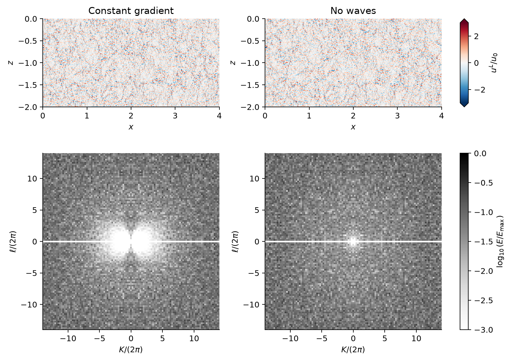
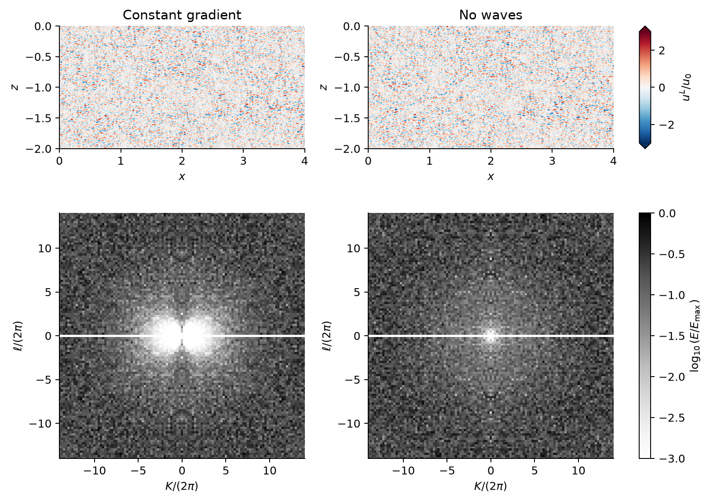
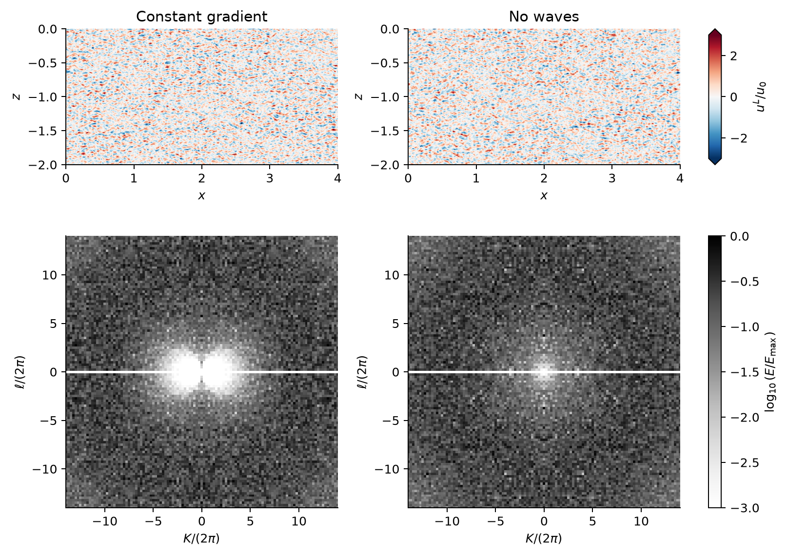

Scope: these runs are constant-gradient mechanism controls. The physical target is the depth-dependent Stokes drift of deep-water waves. See the existing deep-water comparison with velocity above spectra; that comparison uses the earlier H = 1 simulations, not new larger-domain deep-water runs.
Six completed two-dimensional Craik–Leibovich simulations compare a constant Stokes-drift curvature with matched no-wave controls. A deeper domain resolves the low-wavenumber structure using full-depth native modes. The initial eddy size, velocity and grid spacing are held fixed.
The constant-gradient spectra show two depleted lobes on either side of K = 0 over 10–30 Te; the controls do not show the same pronounced two-lobed pattern. This is a qualitative comparison of spectral depletion. It does not by itself establish a sharp exclusion boundary, a resolved dispersion relation, or cascade arrest.
Top panels show the horizontal Lagrangian velocity uL/u0 from seed 1; the bottom panels retain the three-seed, six-snapshot spectra from the original page. A displayed velocity field is a representative realization, not an average over the ensemble. The two columns use matched seeds and common colour scales.



Spectra use the full-depth native Fourier/cosine/sine modes, without tapering, zero padding, smoothing or fitted boundaries. Adjacent time windows share one snapshot. Positive vertical modes are mirrored with their energy split equally between ±ℓ; ℓ = 0 is counted once. The pale ℓ = 0 line in both columns follows the two-dimensional incompressibility and wall constraints, not wave-induced exclusion. Wavenumbers are cycles per original unit length. Each pair has a shared logarithmic colour scale spanning three decades; maxima differ between time windows. Snapshot times and normalization values · Plotting source.
| Domain and grid | Lx = 4, H = 2; 2048 × 1024 cells; exactly two-dimensional. Δx = Δz = 1/512. |
|---|---|
| Boundaries and numerics | Periodic in x; impermeable, free-slip top and bottom. WENO9 advection, third-order Runge–Kutta time stepping, no explicit viscosity. |
| Initial turbulence | Narrow Gaussian ring centred at 27 cycles per original unit length, width 1 cycle per unit length; initial K = 0 modes removed. Three random seeds, each matched between the two profiles. Initially zero horizontally averaged Lagrangian velocity. |
| Fixed scales | rb = 1/9; u0 = 0.0001563598513; Te = 37.69911184. Approximately 19 cells per initial eddy wavelength. These scales are not renormalized to the new depth. |
| Constant-gradient case | ∂zus = 0.5(z + H), hence ∂zzus = +0.5. With s = −∂zus, sz = −0.5. This is an idealized mechanism control, not a monochromatic deep-water Stokes profile. |
| No-wave control | Identical initial fields for each matched seed, with the prescribed Stokes-drift forcing switched off. |
| Duration and output | All six runs reached 100 Te. Velocity output every Te (101 samples); native transfer diagnostics every 5 Te (21 samples). |
| Spectral basis | Fourier modes in x, native full-depth cosine/sine modes in z. Δ(K/2π) = Δ(ℓ/2π) = 0.25. The vertical spacing is twice as fine as the previous full-depth H = 1 basis and four times as fine as the previous half-depth window. |
All six production tasks and their analyses completed successfully on Unity. The maximum absolute native Parseval discrepancy was 6.62 × 10−24 in the stored energy units. This checks the spectral energy accounting; it is not a spatial-convergence test. The campaign completed on 4 November 2026 (US Eastern), with about 31 minutes from the first production start to the final ensemble figure.
These results belong to the larger-domain constant-gradient campaign, separate from the earlier depth-dependent Stokes-profile and long-time runs on the parent page. Raw fields and full time-resolved spectral arrays remain archived on Unity. The downloads here contain the displayed window means, case parameters, and numerical-check summaries.